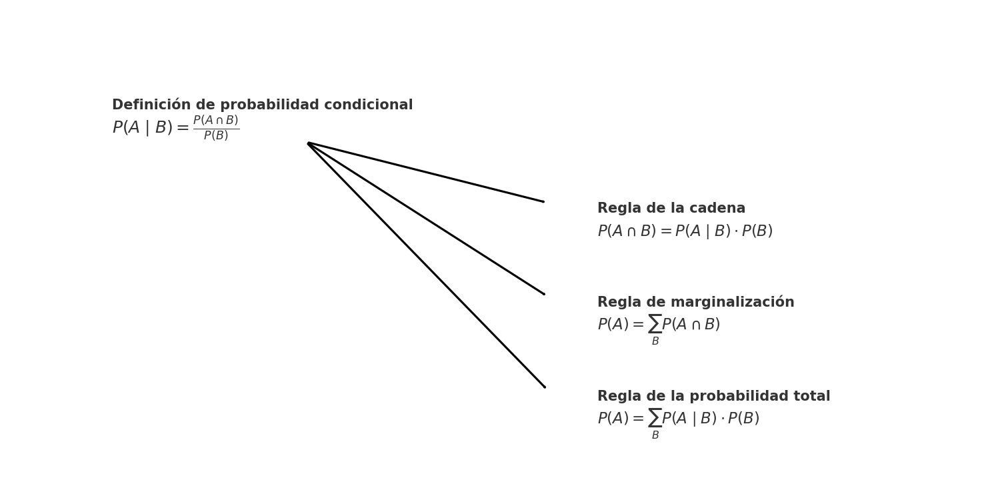

Operaciones con probabilidades#
Una vez que entendemos qué representa una probabilidad y cómo se puede interpretar, el siguiente paso natural es analizar cómo se combinan o se relacionan distintos eventos entre sí.
Esto nos lleva a estudiar conceptos fundamentales como la probabilidad condicional, conjunta y marginal.
1.1. Probabilidad conjunta, condicional y marginal#
Hasta ahora hemos aprendido a:
Definir un espacio muestral \((\Omega)\), que contiene todos los posibles resultados de un experimento.
Considerar subconjuntos de \((\Omega)\) como eventos, organizados en una estructura llamada \((\sigma)\)-álgebra.
Asignar valores de probabilidad a esos eventos mediante funciones que cumplen ciertos principios (como los axiomas de Kolmogórov).
Interpretar esos valores bajo los enfoques frecuentista y bayesiano.
Este marco nos permite describir eventos individuales, pero también eventos compuestos: por ejemplo, cuando dos condiciones ocurren a la vez, o una depende de otra.
¿Qué nos permite considerar eventos compuestos?#
La clave está en la \((\sigma)\)-álgebra:
Al definir el espacio de eventos como una \((\sigma)\)-álgebra, garantizamos que podemos operar con ellos de forma lógica y estructurada:
unir eventos \((A \cup B)\)
tomar complementos \((A^c)\)
y también intersecciones como \((A \cap B)\), que representan eventos conjuntos.
Esto no solo nos permite construir descripciones más ricas de situaciones, sino que nos habilita a hacer operaciones de probabilidad sobre múltiples eventos.
A continuación, exploraremos tres operaciones fundamentales:
1.1.1. Probabilidad conjunta#
La probabilidad conjunta mide la probabilidad de que dos eventos ocurran al mismo tiempo.
Se denota como:
o, si el contexto lo permite, simplemente \(\mathbb{P}(A, B)\).
Ejemplo
Si \((A = \{\text{llover}\})\) y \((B = \{\text{llevar paraguas}\})\), entonces \((\mathbb{P}(A \cap B))\) representa la probabilidad de que llueva y lleves paraguas el mismo día.
1.1.2. Probabilidad condicional#
La probabilidad condicional responde a la pregunta:
¿Cuál es la probabilidad de que ocurra (A) si ya sabemos que ocurrió (B)?
Se define como:
Ejemplo
Si \((\mathbb{P}(\text{llover y llevar paraguas}) = 0.3 )\) y \((\mathbb{P}(\text{llevar paraguas}) = 0.5)\), entonces:
1.1.3. Probabilidad marginal#
La probabilidad marginal es la probabilidad de un evento sin condicionar en ningún otro.
Cuando trabajamos con variables múltiples, podemos obtener la marginal de una variable “resumiendo” la información sobre las otras.
En el caso continuo:
Nota
La marginal es útil cuando queremos concentrarnos en un solo evento o variable, ignorando otras que también están en juego.
1.2. Reglas derivadas de la probabilidad#
Una vez que hemos definido formalmente la probabilidad condicional, podemos deducir tres reglas fundamentales que se utilizan constantemente en modelado probabilístico.
Estas reglas no son nuevos axiomas, sino consecuencias directas de combinar:
Los axiomas de Kolmogórov, especialmente:
La aditividad: \(P(A \cup B) = P(A) + P(B)\) si \(A \cap B = \varnothing\)
La definición de probabilidad condicional
Veamos cada una:
📌 Regla de marginalización#
Se basa en la aditividad: si \(B\) puede tomar varios valores disjuntos, entonces:
Esta regla permite reducir una probabilidad conjunta a una marginal.
📌 Regla de la cadena#
Viene directamente de reordenar la definición de probabilidad condicional:
Esta relación es fundamental en estructuras secuenciales como los modelos gráficos.
También puede escribirse simétricamente:
📌 Regla de la probabilidad total#
Surge al aplicar marginalización sobre la regla de la cadena:
Es decir, descomponemos la probabilidad de \(A\) en función de sus componentes condicionales respecto a \(B\).
Nota técnica
En el contexto de probabilidad, usamos la notación \(P(A, B)\) como abreviatura de \(P(A \cap B)\) (la probabilidad de que ocurran ambos eventos).
Además de ser útil para calcular probabilidades marginales,
la regla de la probabilidad total también puede interpretarse como una constante de normalización:garantiza que la distribución condicional resultante ( P(A \mid B) ) sea válida,
es decir, que sume 1 al considerar todos los posibles valores de (A).

Figura 5. La definición de probabilidad condicional permite derivar tres reglas fundamentales: la regla de la cadena, la regla de marginalización y la regla de la probabilidad total. Estas relaciones son la base del razonamiento probabilístico en contextos donde intervienen múltiples eventos.
Ejercicio intuitivo de clase#

Podemos preguntarnos:
¿Cuál es la probabilidad de seleccionar una manzana?
Dado que elegimos una naranja, ¿Cuál es la probabilidad que la caja haya sido la azul?
Notemos que estas probabilidades no las conocemos de antemano. Incluso, notemos que son probabilidades que involucran más de una variable. Sin embargo, tenemos la información necesaria para inferir estas probabilidades, no sin antes conocer la regla de la suma (marginalización), y la regla del producto (regla de la cadena).
Para obtener estas reglas en nuestro modo intuitivo de estudiar probabilidad, consideremos el caso más general en que tenemos dos variables aleatorias \(X\) y \(Y\), las cuales pueden tomar los valores \(x^i\) para \(i=0,\dots,s\) y \(y^j\) para \(j=0,\dots,t\).
Supongamos que, de un total de \(N\) repeticiones,
en \(n_{ij}\) ocasiones obtuvimos \(X=x^i\) y \(Y=y^j\);
en \(c_{i}\) ocasiones obtuvimos \(X=x^i\), sin importar el valor de \(Y\);
en \(r_{j}\) ocasiones obtuvimos \(Y=y^j\), sin importar el valor de \(X\);
De nuestra definición de probabilidad, tenemos que (suponiendo que \(N \to \infty\)):
Probabilidad conjunta#
La probabilidad conjunta de que \(X=x^i\) y \(Y=y^j\) es:
\[ p(X=x^i, Y=y^j) = \frac{n_{ij}}{N}. \]
Probabilidad marginal#
La probabilidad marginal de que \(X=x^i\) sin importar el valor de Y es;
\[ p(X=x^i) = \frac{c_{i}}{N}. \]Notemos que \(c_i = \sum_j n_{ij}\), y en este sentido podemos establecer la regla de la suma (marginalización):
\[ p(X=x^i) = \sum_{j=0}^{t} p(X=x^i, Y=y^j). \]Similarmente, podemos definir la probabilidad marginal \(p(Y=y^j)\).
Probabilidad condicional#
Si en lugar de considerar todos los posibles repeticiones, consideramos solo aquellas para las que \(X=x^i\), entonces la fracción de dichas repeticionesoara las cuales \(Y=y^j\), la conocemos como probabilidad condicional de \(Y=y^j\) dado \(X=x^i\), y la escribimos como:
\[ p(Y=y^j | X=x^i) = \frac{n_{ij}}{c_i}. \]

Podemos observar que la probabilidad conjunta, la podemos escribir como:
dando lugar a la regla del producto (regla de la cadena), y dando lugar a la definición de probabilidad condicional.
La probabilidad condicional de una variable aleatoria \(Y\) condicionada a que conocemos la variable aleatoria \(X\) (la probabilidad de \(Y\) dado \(X\)), se define como:
siempre que \(p(X)>0\). Si \(p(X)=0\), entonces \(p(Y|X)\) no está definida.
La probabilidad condicional es una distribución de probabilidad válida, en el sentido que:
\(0 \leq p(Y|X) \leq 1\), y
\(\sum_{Y} p(Y|X) = 1\).
Regla de la cadena#
De la definición de probabilidad condicional, se desprende automáticamente lo que conocemos como la regla de la cadena en probabilidad:
Regla de probabilidad total#
Teniendo a la mano la regla de la cadena, y la marginalización, podemos escribir la regla de probabilidad total como:
y se puede entender como una constante de normalización para asegurar que la probabilidad condicional sea una distribución de probabilidad válida.
Resumen
\(0 \leq p(X) \leq 1\): Definición de probabilidad (i)
\(\sum_X p(X) = 1\): Definición de probabilidad (ii)
\(p(X) = \sum_{Y} p(X, Y)\): Marginalización
\(p(X, Y) = p(Y | X) p(X) = p(X | Y) p(Y)\): Regla de la cadena
\(p(X) = \sum_Y p(X | Y) p(Y)\): Probabilidad total: marginalización + r. cadena
Las preguntas iniciales eran:
¿Cuál es la probabilidad de seleccionar una manzana?
Primero que nada, las probabilidades que tenemos son:
Descubrir
En este sentido, y usando la regla de la probabilidad total:
Dado que elegimos una naranja, ¿Cuál es la probabilidad que la caja haya sido la azul?
Descubrir
Ahora, podemos usar la regla de Bayes:
de donde ya conocemos \(p(n | a)\) y la previa \(p(a)\). Adicionalmente,
Por lo cual:
La respuesta a la segunda pregunta es bastante interesante, y demuestra el proceso fundamental de incorporar evidencia en un problema.
Notemos que, antes de saber qué fruta elegimos, la probabilidad previa de elegir la caja azul es \(p(a) = \frac{4}{10}\).
Ahora, al incorporar la evidencia de que la fruta que elegimos fue una naranja, observamos que la probabilidad posterior de elegir la caja azul disminuyó considerablemente a \(p(a | n) = \frac{2}{11}\).
Lo anterior es intuitivo, dado que la proporción de naranjas es significativamente más alta en la caja roja (\(p(n | r) = \frac{3}{4}\)) que en la caja azul (\(p(n | a) = \frac{1}{4}\)).
Por esta bondad de añadir información de evidencia a nuestras inferencias es por lo que la regla de Bayes es tan relevante.